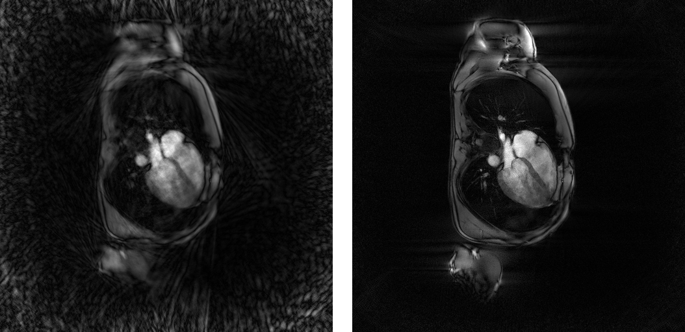
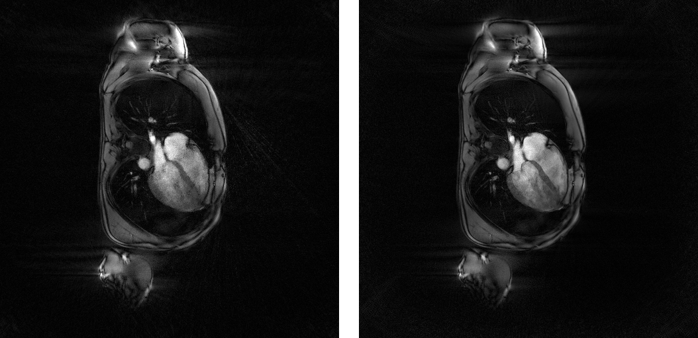
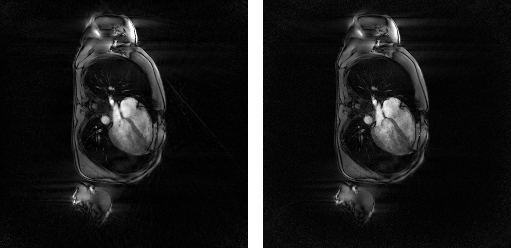
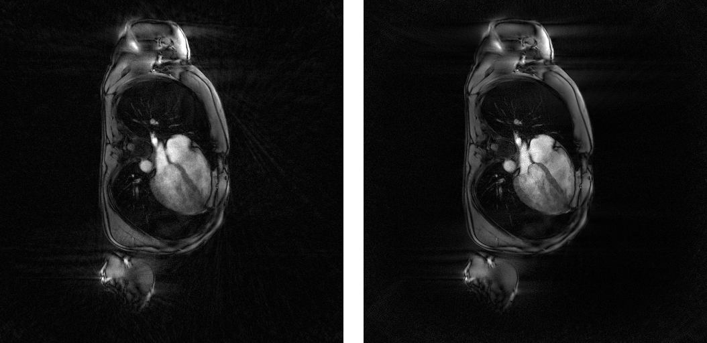
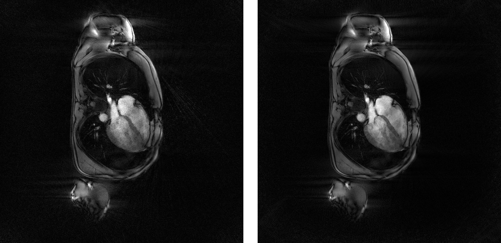

Tutorial 3 : Iterative CINE reconstructions with 1 temporal dimension for non-cartesian data
The code of this tutorial is written in the file demo_script_3.m in the demonstration folder. As any demonstration script, you can open it and run it right away.
We describe here how to call the iterative CINE reconstructions of Monalisa for 1 temporal dimension for non-cartesian data. They are called TevaMorphosia_chain, TevaDuoMorphosia_chain, SensitivaMorphosia_chain and SensitivaDuoMorphosia_chain. These reconstructions are quit efficient….
The script contains the following section.
{kind=link}
Initialisation
% Loading demonstration data myCurrent_script_file = matlab.desktop.editor.getActiveFilename; d = fileparts(myCurrent_script_file); load([d, filesep, '..', filesep, 'demo_data', filesep, 'demo_data_3']); % Creating a folder for reconstruciton result and seting it as current % directory. cd([d, filesep, '..', filesep, '..', filesep, '..']); bmCreateDir('recon_folder'); cd('recon_folder')
Resizing `C`, computing `ve` and permuting `y`
% resizing C C = bmImResize(C, [48, 48], N_u); % computing ve for 2D radial ve = cell(nFr, 1); ve_max = 5*prod(dK_u(:)); for i = 1:nFr ve{i} = bmVolumeElement_voronoi_full_radial2(t{i}); ve{i} = min(ve{i}, ve_max); end % putting data in column shape for reconstruction for i = 1:nFr y{i} = bmPermuteToCol(y{i}); end
Evaluating the initial image for further iterative reconstructions
x0 = cell(nFr, 1); for i = 1:nFr x0{i} = bmMathilda(y{i}, t{i}, ve{i}, C, N_u, N_u, dK_u); end bmImage(x0);

Evaluating gridding matrices
[Gu, Gut] = bmTraj2SparseMat(t, ve, N_u, dK_u);
Regularized least-square reconstruction with (non-motion-corrected) temporal \(l_1\)- regularization for non-cartesian data (TevaMorphosia_chain)
file_label = 'tevaMorphosia_chain'; % label to name the file containing the result frSize = N_u; nCGD = 4; nIter = 30; delta = 0.5; rho = 10*delta; regul_mode = 'normal'; witness_ind = 1:5:nIter; witnessInfo = bmWitnessInfo(file_label, witness_ind); x = bmTevaMorphosia_chain(x0, ... [], [], ... y, ve, C, ... Gu, Gut, frSize, ... [], [], ... delta, rho, regul_mode, ... nCGD, ve_max, ... nIter, witnessInfo); bmImage(x)

Estimation of deformation fields
maxPixDisplacement = 10; nIter = 500; reg_file = []; reg_mask = []; h = x; [DF_to_prev, imReg_to_prev] = bmImDeformFieldChain_imRegDemons23( h, frSize, 'curr_to_prev', nIter, 1, reg_file, reg_mask, maxPixDisplacement);
Evaluation of deformation matrices
[Tu, Tut] = bmImDeformField2SparseMat(DF_to_prev, N_u, [], true);
Regularized least-square reconstruction with motion-corrected temporal \(l_1\)- regularization for non-cartesian data (TevaMorphosia_chain)
file_label = 'tevaMorphosia_chain_DF'; % label to name the file containing the result frSize = N_u; nCGD = 4; nIter = 30; delta = 1.5; rho = 10*delta; regul_mode = 'normal'; witness_ind = 1:5:nIter; witnessInfo = bmWitnessInfo(file_label, witness_ind); x = bmTevaMorphosia_chain(x0, ... [], [], ... y, ve, C, ... Gu, Gut, frSize, ... Tu, Tut, ... delta, rho, regul_mode, ... nCGD, ve_max, ... nIter, witnessInfo); bmImage(x)
Regularized least-square reconstruction with backward and forward (non-motion-corrected) temporal \(l_1\)- regularization for non-cartesian data (TevaDuoMorphosia_chain)
file_label = 'tevaDuoMorphosia_chain'; % label to name the file containing the result frSize = N_u; nCGD = 4; nIter = 30; delta = 0.5; rho = 10*delta; regul_mode = 'normal'; witness_ind = 1:5:nIter; witnessInfo = bmWitnessInfo(file_label, witness_ind); x = bmTevaDuoMorphosia_chain(x0, ... [], [], [], [], ... y, ve, C, ... Gu, Gut, frSize, ... [], [], [], [], ... delta, rho, regul_mode, ... nCGD, ve_max, ... nIter, witnessInfo); bmImage(x)

Estimation of deformation fields
maxPixDisplacement = 10; nIter = 500; reg_file = []; reg_mask = []; h = x; [DF_to_prev, imReg_to_prev] = bmImDeformFieldChain_imRegDemons23( h, frSize, 'curr_to_prev', nIter, 1, reg_file, reg_mask, maxPixDisplacement); [DF_to_next, imReg_to_next] = bmImDeformFieldChain_imRegDemons23( h, frSize, 'curr_to_next', nIter, 1, reg_file, reg_mask, maxPixDisplacement);
Evaluating deformation matrices
[Tu1, Tu1t] = bmImDeformField2SparseMat(DF_to_prev, N_u, [], true); [Tu2, Tu2t] = bmImDeformField2SparseMat(DF_to_next, N_u, [], true);
Regularized least-square reconstruction with backward and forward motion-corrected temporal \(l_1\)- regularization for non-cartesian data (TevaDuoMorphosia_chain)
file_label = 'tevaDuoMorphosia_chain_DF'; % label to name the file containing the result frSize = N_u; nCGD = 4; nIter = 30; delta = 1.5; rho = 10*delta; regul_mode = 'normal'; witness_ind = 1:5:nIter; witnessInfo = bmWitnessInfo(file_label, witness_ind); x = bmTevaDuoMorphosia_chain(x0, ... [], [], [], [], ... y, ve, C, ... Gu, Gut, frSize, ... Tu1, Tu1t, Tu2, Tu2t, ... delta, rho, regul_mode, ... nCGD, ve_max, ... nIter, witnessInfo); bmImage(x)

Regularized least-square reconstruction with (non-motion-corrected) temporal \(l_2\)- regularization for non-cartesian data (SensitivaMorphosia_chain)
file_label = 'sensitivaMorphosia_chain'; % label to name the file containing the result frSize = N_u; nCGD = 4; nIter = 30; delta = 5; regul_mode = 'normal'; witness_ind = 1:5:nIter; witnessInfo = bmWitnessInfo(file_label, witness_ind); x = bmSensitivaMorphosia_chain( x0, ... y, ve, C, ... Gu, Gut, frSize, ... [], [], ... delta, regul_mode, ... nCGD, ve_max, ... nIter, witnessInfo ); bmImage(x)

Estimation of deformation fields
maxPixDisplacement = 10; nIter = 500; reg_file = []; reg_mask = []; h = x; [DF_to_prev, imReg_to_prev] = bmImDeformFieldChain_imRegDemons23( h, frSize, 'curr_to_prev', nIter, 1, reg_file, reg_mask, maxPixDisplacement);
Evalutation of deformation matrices
[Tu, Tut] = bmImDeformField2SparseMat(DF_to_prev, N_u, [], true);
Regularized least-square reconstruction with motion-corrected temporal \(l_2\)- regularization for non-cartesian data (SensitivaMorphosia_chain)
file_label = 'sensitivaMorphosia_chain_DF'; % label to name the file containing the result frSize = N_u; nCGD = 4; nIter = 30; delta = 15; regul_mode = 'normal'; witness_ind = 1:5:nIter; witnessInfo = bmWitnessInfo(file_label, witness_ind); x = bmSensitivaMorphosia_chain( x0, ... y, ve, C, ... Gu, Gut, frSize, ... Tu, Tut, ... delta, regul_mode, ... nCGD, ve_max, ... nIter, witnessInfo ); bmImage(x)
Regularized least-square reconstruction with backward and forward (non-motion-corrected) temporal \(l_2\)- regularization for non-cartesian data (SensitivaDuoMorphosia_chain)
file_label = 'sensitivaDuoMorphosia_chain'; % label to name the file containing the result frSize = N_u; nCGD = 4; nIter = 30; delta = 5; regul_mode = 'normal'; witness_ind = 1:5:nIter; witnessInfo = bmWitnessInfo(file_label, witness_ind); x = bmSensitivaDuoMorphosia_chain( x0, ... y, ve, C, ... Gu, Gut, frSize, ... [], [], [], [], ... delta, regul_mode, ... nCGD, ve_max, ... nIter, witnessInfo ); bmImage(x)

Estimation of deformation fields
maxPixDisplacement = 10; nIter = 500; reg_file = []; reg_mask = []; h = x; [DF_to_prev, imReg_to_prev] = bmImDeformFieldChain_imRegDemons23( h, frSize, 'curr_to_prev', nIter, 1, reg_file, reg_mask, maxPixDisplacement); [DF_to_next, imReg_to_next] = bmImDeformFieldChain_imRegDemons23( h, frSize, 'curr_to_next', nIter, 1, reg_file, reg_mask, maxPixDisplacement);
Evaluation of deformation matrices
[Tu1, Tu1t] = bmImDeformField2SparseMat(DF_to_prev, N_u, [], true); [Tu2, Tu2t] = bmImDeformField2SparseMat(DF_to_next, N_u, [], true);
Regularized least-square reconstruction with backward and ofrward motion-corrected temporal \(l_2\)- regularization for non-cartesian data (SensitivaDuoMorphosia_chain)
file_label = 'sensitivaDuoMorphosia_chain_DF'; % label to name the file containing the result frSize = N_u; nCGD = 4; nIter = 30; delta = 15; regul_mode = 'normal'; witness_ind = 1:5:nIter; witnessInfo = bmWitnessInfo(file_label, witness_ind); x = bmSensitivaDuoMorphosia_chain( x0, ... y, ve, C, ... Gu, Gut, frSize, ... Tu1, Tu1t, Tu1, Tu1t, ... delta, regul_mode, ... nCGD, ve_max, ... nIter, witnessInfo ); bmImage(x)
{kind=link}
{kind=link}
{kind=link}
{kind=link}
{kind=link}
{kind=link}
{kind=link}
{kind=link}